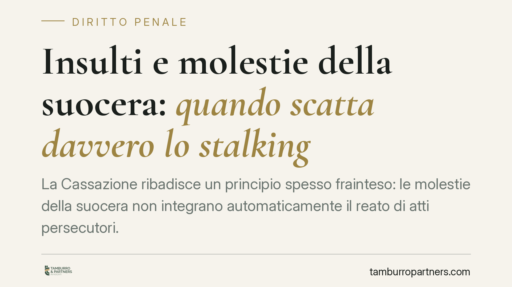

Insulti e molestie della suocera: quando scatta davvero lo stalking
La Cassazione ribadisce un principio spesso frainteso: le molestie della suocera non integrano automaticamente il reato di atti persecutori. Per lo stalking non basta la condotta ripetuta, serve la prova di un effetto concreto sulla vittima: ansia grave, timore per la propria incolumità o modifica delle abitudini di vita. Un chiarimento che pesa sui tanti conflitti familiari degenerati in denuncia penale.

Il fatto
Un conflitto tra suocera e nuora, fatto di insulti e comportamenti molesti reiterati, può sfociare in una denuncia per stalking. Ma non ogni molestia, per quanto ripetuta e sgradevole, integra il reato di atti persecutori. La Cassazione ha chiarito che il punto non è la condotta in sé, bensì l'effetto che essa produce sulla vittima. Senza la prova di quell'effetto, il reato non sussiste.
Inquadramento normativo
Lo stalking è disciplinato dall'articolo 612 bis del Codice penale, che punisce chi, con condotte reiterate, minaccia o molesta taluno in modo da cagionare uno di tre eventi alternativi:
- un perdurante e grave stato di ansia o di paura;
- un fondato timore per l'incolumità propria, di un prossimo congiunto o di persona legata da relazione affettiva;
- una modifica delle abitudini di vita costretta dalla condotta persecutoria.
La norma richiede quindi due elementi distinti: da un lato la reiterazione delle molestie o minacce, dall'altro la produzione di almeno uno di questi effetti. Si tratta di un reato "di evento": non è sufficiente il comportamento dell'agente, occorre che esso abbia prodotto una conseguenza concreta e dimostrabile sulla persona offesa.
La pronuncia richiamata (Cassazione, 2021) si inserisce in un orientamento consolidato: il giudice deve verificare in concreto che lo stato d'ansia sia "perdurante e grave", non un semplice fastidio o disagio momentaneo. Allo stesso modo, la modifica delle abitudini deve essere reale e provata, non genericamente affermata.
Implicazioni pratiche
Per chi si trova coinvolto in un conflitto familiare, la conseguenza è netta: la denuncia penale non è una scorciatoia automatica. Anche di fronte a condotte oggettivamente moleste, il procedimento può concludersi con l'archiviazione o l'assoluzione se manca la prova dell'evento richiesto dalla norma.
Questo vale in entrambe le direzioni.
Chi denuncia deve essere consapevole che dovrà documentare l'impatto subito. Affermazioni generiche sul disagio non bastano. Serve un quadro coerente: certificazioni mediche, referti, testimonianze, prova di scelte concrete adottate per sottrarsi alle molestie (cambio di numero, di percorsi, di abitudini quotidiane).
Chi è accusato, per contro, può difendersi contestando proprio l'assenza dell'evento. Una lite familiare accesa, per quanto verbalmente violenta, non equivale di per sé ad atti persecutori penalmente rilevanti. La distinzione tra un conflitto degenerato e uno stalking è spesso decisiva.
È bene ricordare che rimangono comunque configurabili altre fattispecie, come le minacce (art. 612 c.p.), le molestie (art. 660 c.p.) o l'ingiuria, oggi depenalizzata ma fonte di responsabilità civile. Escludere lo stalking non significa escludere ogni rilevanza giuridica della condotta.
Cosa fare in concreto
- Documenta l'impatto, non solo la condotta. Conserva messaggi, registra episodi con data e luogo, raccogli testimonianze. Se hai sviluppato ansia o disturbi, rivolgiti a un medico e fatti rilasciare una certificazione.
- Valuta la fattispecie corretta. Non ogni molestia è stalking. Consigliamo di verificare con un legale se la vicenda integri il 612 bis o altre e diverse ipotesi, penali o civili.
- Non affidarti a formule generiche. In sede di denuncia o querela, descrivi in modo puntuale come la condotta ha inciso sulla tua vita quotidiana.
- Se sei accusato, ricostruisci il contesto. Un conflitto reciproco e simmetrico può escludere la persecutorietà unilaterale richiesta dalla norma.
- Muoviti nei termini. Lo stalking è procedibile a querela, da proporre entro sei mesi; alcune ipotesi aggravate procedono d'ufficio. Verifica per tempo la tua posizione.
Il messaggio della giurisprudenza è chiaro: il diritto penale non interviene su ogni tensione familiare, ma solo quando la condotta produce un danno serio e provato. Comprendere questa soglia è il primo passo, sia per chi intende agire, sia per chi deve difendersi.
---
*Contributo informativo a cura di Tamburro & Partners - Avv. Giuseppe Tamburro. Non costituisce parere legale.*
Ogni condominio ha una storia a sé.
Se gestisci un'amministrazione e vuoi un confronto su una specifica questione condominiale, scrivi allo studio. Ti rispondiamo entro un giorno lavorativo.